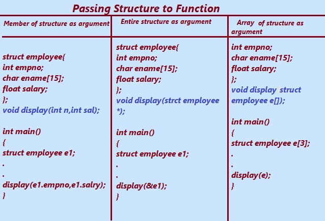

In the C Programming Language structure can be passed as arguments to the function like the fundamental data types. Use of the Structure functions in C program make the code efficient.
It is always good if a code consumes less memory and takes less time to execute.
First of all let explore the concept of structure and function in C Language.
Functions in C Language is defined as the reusable codes that perform some specific task when they are invoked or called.
Derived data types are formed from primary or fundamental data types. On other hand Structures are user-defined data type. The structures can have many fundamental data types as its members grouped into a single user-defined data type.
When we call a function by passing the values of the variables is known as the call by value. And When we call the function by passing the address of the variables is known as call by reference.
The dot (.) is the membership operator which is used to access a structure member. The arrow (->) operator is to use to access the members of a structure when the pointer references the structure. We have just understood the basics of structure and functions. It will make us easy to understand structure functions clearly.
In a C Program a Structures can be passed as arguments to the functions. This can be achieved in three ways. They are,
1.Passing Structure members as an argument to Function.
2.Passing the entire structure as an argument reference.
3.An array of structure as function arguments.
Structure and Function in C Programming.

1. Passing Structure Members to Functions.
Sometimes in few situations we don’t want to pass the entire structure to the function. We just want to pass a few members of the structure. The membership operator the dot (.) operator is used to o access the individual members of the structure and pass the members to the function.
Let us we are interested to create a structure to hold the details of a employee, such as the employee number, name and the salary, and display the employee number, name and salary using a function. Passing the entire structure to the function is overloaded and unnecessary when we want to show only a few structure members or attributes.
In the given example below, the structure employee contains the employee number, name and the salary of the employee, but we need to display or print only the employee number and salary. we have passed only the required structure members to function.
Let us look at the program code and understand how to pass structure members to the function in C programming.
The example shows how to pass structure members to function.
#include <stdio.h>
struct employee {
int empno;
char ename[15];
float salary;
};
void display(int n, float sal);
int main() {
struct employee e1;
printf("Enter the Employee number: \n");
scanf("%d",&s1.empno);
printf("Enter name of a employee: \n");
gets(e1.name);
printf("Enter Salary: \n");
scanf("%f", &e1.salary);
display(e1.empno,e1.salary);
return 0;
}
void display(int n,float sal ) {
printf("\nDisplaying information\n");
printf("Employee number: %d", n);
printf("\nSalary: %.2f", sal);
}
Output:
Enter the Employee number: 101
Enter name: KailasW
Enter Salary: 9820
Displaying information
Employee number: 101
Salary: 9820
Program Explanation:
In the above given program code, a structure is created to hold the employee number, name and salary of the employee. The input accepted from the user is stored in the structure. A function named display () is created, which takes the employee number(empno) and the salary of the employee as the parameter. Using the membership dot (.) operator, the member of the structure is accessed and passed it to the function.
2.Passing Entire structure as argument or Reference.
Next, in this section of learning structure-function, let's study and explore How to Pass Structure by Reference as argument to function.
When we pass the structure variable parameter in the function as a value it will make a copy of the structure variable. Let us assume that we have a structure with a plenty number of structure members.
To pass all the members to function consumes lot of memory and lot of time.
To overcome this problem in C language we can pass the address of the structure in a function.
Passing address to function is related to pointer topics in c, to learn more refer pointer topic.
Pointers are the special variables defined in C language that hold the address of another variable.
To pass entire structure as argument to function We can use pointers to pass the structure by reference.
Let us look at an example to understand how to pass a entire structure as argument using pointers.
#include<stdio.h>
struct employee {
int empno;
char ename[15];
float salary;
};
void print_struct(struct employee *);
int main()
{
struct employee e1;
printf(“\n Enter the Employee Number\n”);
scanf(“%d”,&e1.empno);
printf("Enter the employee name : \n");
scanf("%s",e1.ename);
printf("Enter the employee Salary : \n");
scanf("%f",&e1.salary);
print_struct(&e1);
return 0;
}
void print_struct(struct employee *ptr)
{
printf("\n---Details---\n");
printf(“Employee Number: %d\n”,ptr->empno);
printf("Employee Name: %s\n", ptr->ename);
printf("Employee Salary: %.2f\n", ptr->salary);
printf("\n");
}
The output of the above code is as follows:
Enter the employee Number : 7900
Enter the employee Name : James
Enter the Employee Salary: 8500
---Details---
Employee Number: 7900
Employee Name: James
Employee Salary: 8500.00
Explanation:
In the above code:
• In the above program A structure named employee and a function named print_struct() are defined. The structure stores the employees number, name and the salary.
• Inside the main() function, we have created a structure variable named e1 and stored the values. Later the address of the structure e1 is passed into the function print_struct() , which displays the information entered by the user.
• The address of e1(&e1) is passed to the print_struct () function using the address operator ampersand (&). The pointer members are accessed with the help arrow operator -> operator.
3.An Array of Structures as Function Arguments
An array in C Language is defined as a group or collection of similar data types. From previous knowledge we can conclude that the structure is also a data type. Therefore, a group of multiple structure variable is known as an array of structures.
Let us understand from the given example how to pass an array of structures as function arguments.
#include<stdio.h>
struct employee {
int empno;
char ename[15];
float salary;
};
void show_struct(struct employee str_arr[]);
int main() {
struct employee emp[3] = {
{
101,"Ajay",1088.6
},
{
102,"Gaurav",6060.4
},
{
103,"Sachin",9998.4
}
};
show_struct(emp);
return 0;
}
void show_struct(struct employee e[]) {
int i;
for (i = 0; i < 3; i++) {
printf(“Employee Number:%d\n”,e[i].empno);
printf("Name: %s\n",e[i].ename);
printf("Salary: %s\n", e[i].salary);
printf("\n");
}
}
The output of the above function is as follows.
Employee Number: 101
Name: Ajay
salary: 6060.4
Employee Number: 102
Name: Gaurav
salary: 6060.4
Employee Number: 103
Name: Sachin
salary: 9998.4
Explanation:
In the above example given above:
• The structure named emp is created. The structure employee has empno,ename and salary as structure members, which store the employee number, name and salary details respectively.
• we have created an array of structure variables named emp[] in main() function.
• A function named show_struct() is created. The show_struct() function shows the empno,ename and salary. The array emp is passed to the show_struct() function.
The show_struct() function read and displays each element of the array one by one.
Previous Topic:-->> Structure Within Structure || Next topic:-->>Structure examples.
Other Topics:
Variables and Identifiers
Relational Operators
if-else statements
Switch case
While Loop
Infinite while Loops
C FOR Loop
Infinite for Loops
Continue in Loops
One Dimensional Array
Two Dimensional Arrays
Read and Display 2D Arrays
Types of functions
Passing Array To Functions
Nesting of Function
Array vs Structure
Array of Structure
Structures and Functions
Structures Within Structures
Use Of Pointers In C
File Handling In C
Loops FAQ
Arrays FAQ
count vowels in a file
Function FAQ
Conditional Statements Assignments
For Loops Assignments
Arrays Assignments
Function Assignments
Structure Assignments
Pointers Assignments
Files Assignments
Storage classes Assignments
Binary Files
count words,lines in a file
Copy files
Update File
Continue in Loops
break in Loops
Difference Between While and Do while
difference while do..while & for
malloc
calloc
Storage Classes
Operators MCQ
Conditional Statements MCQ
Loops MCQ
Arrays MCQ
Function MCQ
Structure MCQ
Pointers MCQ
Files MCQ
Storage classes MCQ